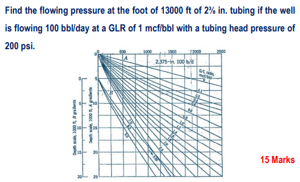
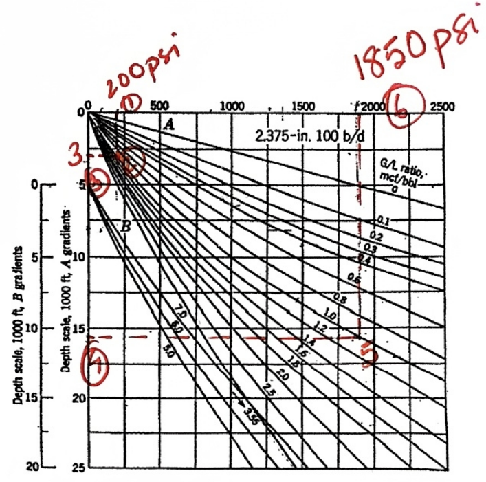

Question 1: Finding Flowing Bottomhole Pressure
Problem Statement

Graphical Solution

Detailed Answer & Analysis
Objective: Find the flowing pressure at the foot (Bottomhole Pressure, BHP) of 13,000 ft of 2 3/8 in. tubing. The well is flowing 100 bbl/day at a Gas-Liquid Ratio (GLR) of 1 mcf/bbl, with a given Tubing Head Pressure (THP) of 200 psi.
Step-by-Step Procedure using the Gilbert Gradient Curve:
- Locate THP: Start at the top pressure axis and locate the Tubing Head Pressure of 200 psi (marked as ①).
- Find Equivalent Depth: Drop vertically down from 200 psi to intersect the gradient curve corresponding to the given GLR of 1.0 mcf/bbl (marked as ②).
- Read the equivalent depth horizontally on the left axis. The equivalent depth for the wellhead is approximately 3,300 ft (marked as ③).
- Add Tubing Length: Add the actual length of the tubing to this equivalent depth to find the equivalent depth of the bottom of the well.
New Equivalent Depth = 3,300 ft + 13,000 ft = 16,300 ft (marked as ④). - Locate New Point: Move horizontally to the right from the new depth of 16,300 ft to intersect the same GLR curve (1.0 mcf/bbl) (marked as ⑤).
- Read BHP: Move vertically upward from this intersection point to read the corresponding pressure on the top axis.
Final Answer: The flowing bottomhole pressure is approximately 1850 psi (marked as ⑥).